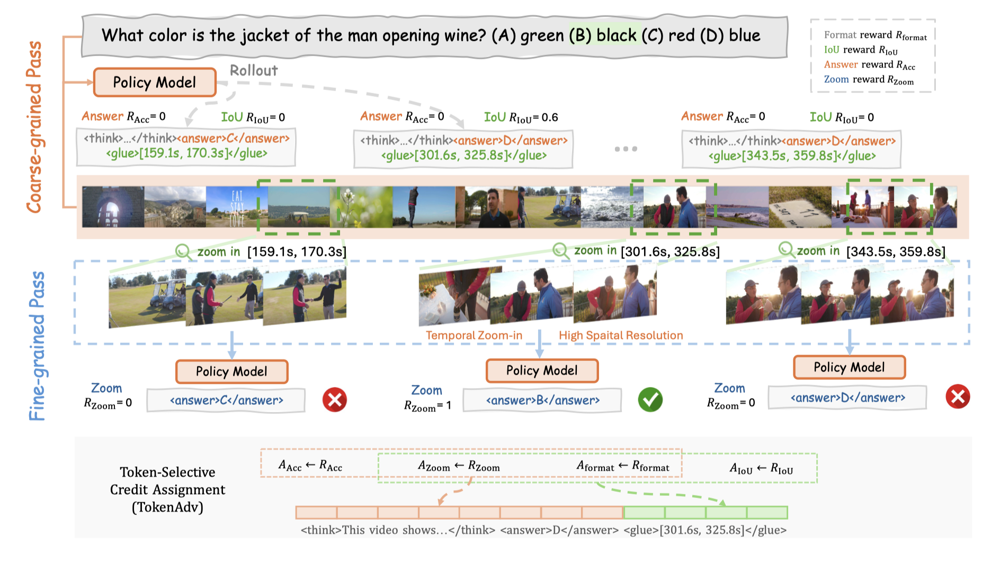

Xiaoqian Shen
About Me
I am currently a PhD student of Computer Science at King Abdullah University of Science and Technology supervised by Mohamed Elhoseiny. Before that, I received BSc in Computer Science from Jilin University, China. I have been fortunate to develop research and industry experience through internships at Meta and Nvidia.
Research Interests
- Generative Models: Image Generation, Video Generation (MoStGAN-VCVPR, StoryGPT-VCVPR)
- Vision-Language: Multi-Modal Comprehension (VgentNeurIPS, LongVUICML, MiniGPT-4ICLR)
News
- [Sep. 2025] One paper (Vgent) gets accepted to NeurIPS’25 (Spotlight) 🎉
- [May. 2025] One paper (LongVU) gets accepted to ICML’25 🎉
- [Feb. 2025] One paper (StoryGPT-V) gets accepted to CVPR’25 🎉
- [July. 2024] Two papers (GoldFish, AffectVisDial) get accepted to ECCV’24
- [Mar. 2024] One paper (HyperCGAN) gets accepted to CVPR’24
- [Jan. 2024] One paper (MiniGPT-4) gets accepted to ICLR’24
- [Nov. 2023] Successfully defended my Master thesis
- [July. 2023] One paper (HRS-Bench) gets accepted to ICCV’23
- [Feb. 2023] One paper (MoStGAN-V) gets accepted to CVPR’23
- [Sep. 2022] Started my Master journey at KAUST
- [July. 2022] One paper (HGR-Net) gets accepted to ECCV’22
- [Dec. 2021] Joined Vision-CAIR at KAUST as a visiting research student
Experience
- Research Intern, Taiwan, Nvidia Jun 2025 - Sep 2025
-
 Research Scientist Intern, XR Core AI, Meta
May 2024 - Nov 2024
Research Scientist Intern, XR Core AI, Meta
May 2024 - Nov 2024
-
 Visiting Research Student at Mohamed Elhoseiny's Group, KAUST
Dec 2021 - Mar 2022
Visiting Research Student at Mohamed Elhoseiny's Group, KAUST
Dec 2021 - Mar 2022
-
 Research Assistant at Yongfeng Huang's Group, Tsinghua University
Dec 2020 - Mar 2021
Research Assistant at Yongfeng Huang's Group, Tsinghua University
Dec 2020 - Mar 2021
Publications [ Google Scholar]
-

Preprint Arxiv preprint 2025Project Page Code Work done at Nvidia
-
NeurIPSNeurIPS 2025Project Page Code Spotlight (Top 3%)
-
 ICML
ICML 2025
ICML
ICML 2025
-
CVPR
-
 ICLR
ICLR 2024
ICLR
ICLR 2024
-
 ECCV
ECCV
-
 ECCV
ECCV
-

Preprint
-
 CVPR
CVPR
Services
Conference Reviewers
- CVPR, ECCV, AAAI, ICLR, ICCV, AAAI
- SIGGRAPH Asia, NeurIPSW
Journal Reviewers
- IJCV, CVIU
Teaching Assistant
- KAUST CS 283 Deep Generative Modeling
Powered by Jekyll and Minimal Light theme.